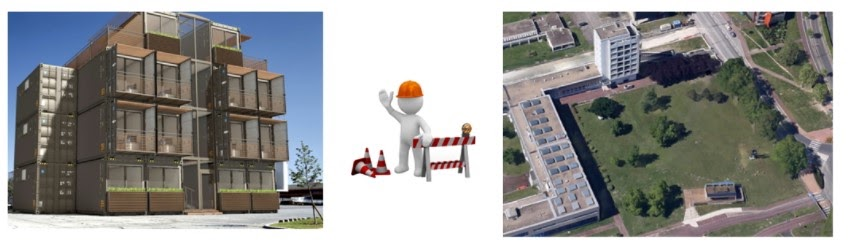

Séance 7: Modéliser l'agencement extérieur
Activité 1: Accéder au terrain
Le terrain se situe à l'adresse suivante : Esplanade des Arts et Métiers à Talence (Campus Universitaire de Bordeaux)
TRAVAIL DU GROUPE
Relever les dimensions du terrain.
Activité 2 : Proposer une implantation des 6 conteneurs
TRAVAIL DU GROUPE
Chaque groupe va chercher comment implanter 6 conteneurs sur le terrain choisi.

Cahier des charges pour l'implantation des 6 conteneurs :
Dimensions des conteneurs : Chaque conteneur mesure environ 12 mètres de long, 2,4 mètres de large et 2,6 mètres de hauteur. Il faudra tenir compte de ces dimensions lors de l'implantation sur le terrain.
Accessibilité : Les conteneurs doivent être placés de manière à permettre un accès facile et sécurisé pour les occupants. Prévoir des espaces de circulation entre les conteneurs et, si nécessaire, des allées et des escaliers.
Espace entre les conteneurs : Prévoir un espace d'au moins 1 mètre entre chaque conteneur pour permettre une circulation et une ventilation suffisantes.
Orientation des conteneurs : Les conteneurs doivent être orientés de manière à profiter de la lumière naturelle et à minimiser les gains de chaleur en été et les pertes de chaleur en hiver. Pensez à l'orientation nord-sud et est-ouest pour optimiser l'exposition au soleil.
Espaces verts et zones de détente : Réservez des espaces pour la végétalisation et des zones de détente pour les occupants. Ces espaces pourraient inclure des jardins, des aires de jeux ou des espaces de repos.
Durabilité et impact environnemental : Essayez de minimiser l'impact environnemental en utilisant des matériaux durables et en concevant des espaces qui favorisent la conservation de l'énergie et de l'eau.
En tenant compte des contraintes énumérées ci-dessus, chaque groupe devra proposer un plan d'implantation pour les 6 conteneurs sur le terrain choisi. Le plan devra inclure les éléments suivants :
Emplacement des conteneurs
Espaces de circulation et accès
Espaces verts et zones de détente
Infrastructure et services à proximité